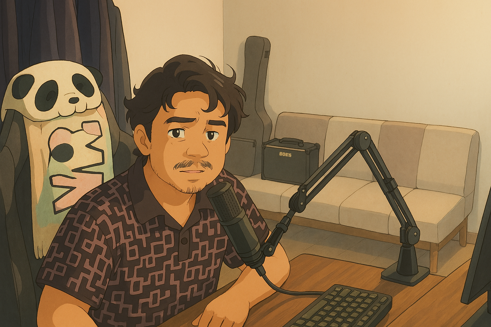

A Personal Wiki by
Ruben Saragih
Getting startedShares what I learn and my interests in cloud computing
Interactive Learn

Beberapa hands-On dan penjelasan materi pada Wiki akan dilengkapi dengan video dan di harapkan dapat mempermudah pemahaman tentang materi yang akan di pelajari.
Subscribe channel youtube Saragih Ruben untuk mendukung saya dalam pembuatan materi dan video selanjutnya.